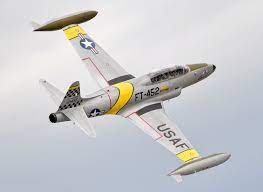

Training aircraft typically have dual controls, enabling both the instructor and the student pilot to manipulate the aircraft's flight controls. This arrangement ensures that the instructor can intervene or take over control if necessary, promoting a safe and structured learning environment. These aircraft are designed with simplicity and reliability in mind, often incorporating systems and features that facilitate pilot training. They may have reduced complexity compared to operational aircraft, allowing students to focus on mastering fundamental flight skills before progressing to more advanced platforms. Training aircraft can have different configurations depending on the type of flight training they provide. They can be fixed-wing aircraft, such as propeller-driven trainers or jet-powered trainers, or they can be rotorcraft (helicopters) used for helicopter flight training. Each type of training aircraft offers unique characteristics suited to the specific training objectives and requirements.